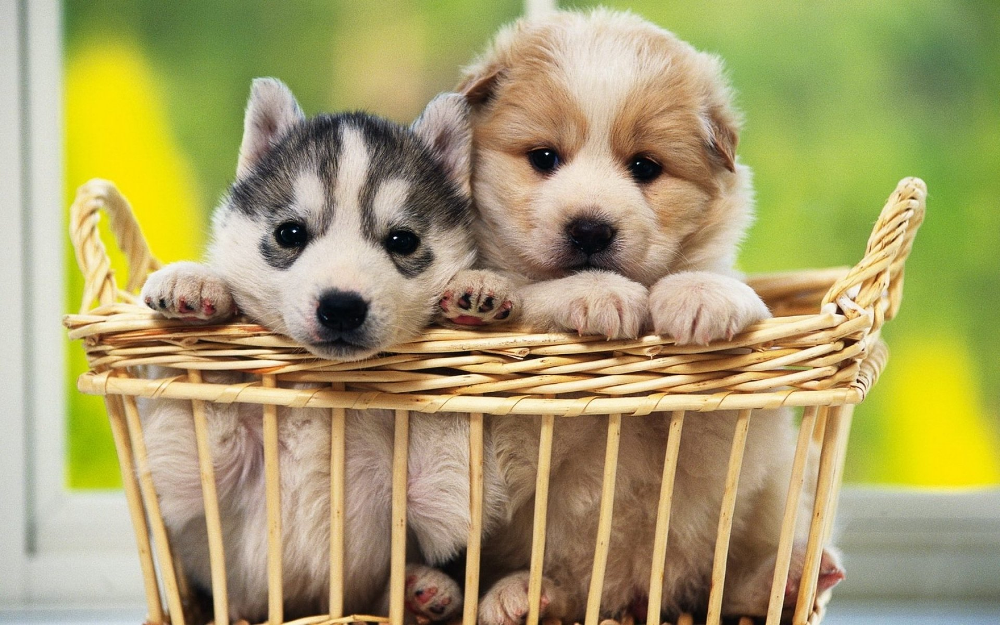
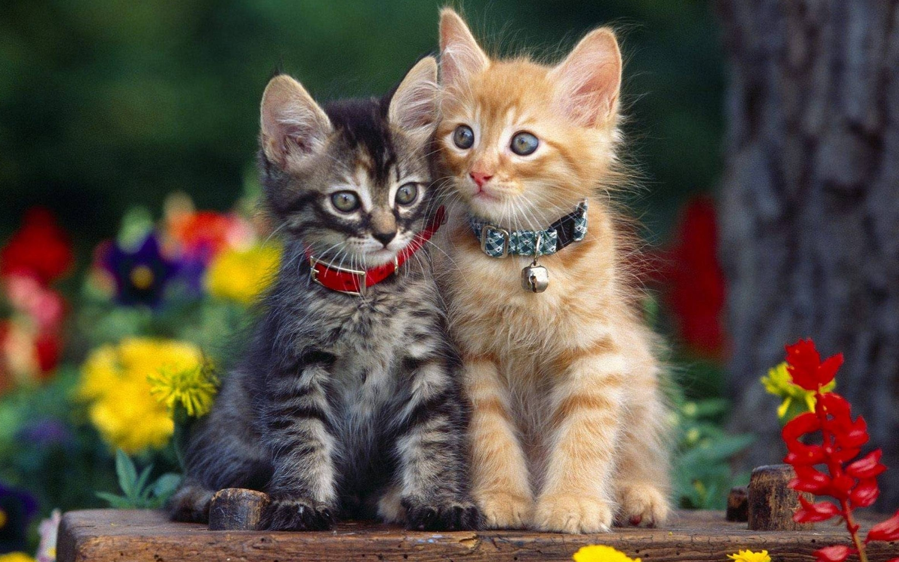

ADOPCIÓN
Actualmente puedes adoptar los siguientes animales.

PERROS
Es un animal inteligente y leal a su amo, de ahí su fama de ser el mejor amigo del hombre.

GATOS
Con fama de independientes y poco apegados a sus cuidadores, lo cierto es que los gatos son unos excelentes compañeros para cualquier hogar.